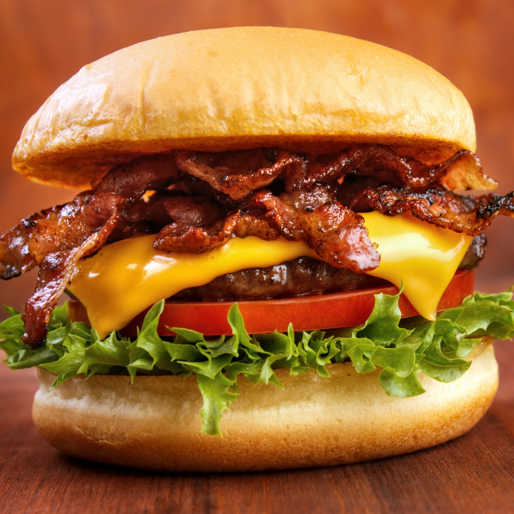

Our Favourite Menu Items



Ben's Signature Burger, £3.99
A fresh beef patty made in store with bacon, cheese, lettuce & tomato - Our Signature burger is exactly that...the perfect blend of what a classic burger should be!
The All In Burger, £4.99
A fresh beef patty made in store, lettuce, tomato, pickles and cheese - The all in burger is all your favourite burger ingriedients
The Gourmet Burger, £5.99
A fresh beef patty made in store, lettuce, onions, bacon, cheese with mayo - This is as good as it gets...the name speaks for itself!
A Helping of our Dirty Fries, £3.50
Not to be missed! Our loaded fries are our hand made fries loaded with generous helpings of shredded beef, cheese and warming spicy mayo...perfect for sharing or to indulge with alone!